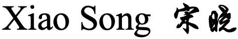

|

博士生
南京大学 我在寻求多模态方向的研究合作！
同时欢迎感兴趣的本科生、硕士生一起交流学习。 |
|


研究方向
模式识别、计算机视觉、自然语言处理、多模态大模型、因果干预。
教育和工作经历
| 2024.9-至今 | 南京大学，苏州 学术博士, 计算机科学与技术专业 导师：单彩峰教授，合作导师：傅朝友助理教授 |
| 2023.7-2024.7 | 中国科学院深圳先进技术研究院，深圳 研究实习员 PI：王如心副研究员 |
| 2020.9-2023.6 | 北京工业大学，北京 学术硕士, 计算机科学与技术专业 导师：张晓丹副教授，合作导师：冀俊忠教授 |
最新消息
- [09/2024] 一篇关于放射科报告生成的论文被 ACM-BCB (Oral) 接收.
- [09/2024] 我入学了南京大学，苏州校区，在谭铁牛院士和单彩峰教授的课题组学习.
- [07/2023] 我入职了中国科学院深圳先进技术研究院.
- [06/2023] 我取得了硕士学位，3位外盲审专家均给我的学位论文评价为A等级.
- [02/2023] 一篇关于脑CT图像分类论文被 JVCIR接收.
- [08/2022] 一篇关于放射科报告生成的论文被自然语言处理领域顶会 COLING 2022 (Oral) 接收.
出版物 | 谷歌学术
-
Rethinking Radiology Report Generation via Causal Inspired Counterfactual Augmentation.
Xiao Song, Jiafan Liu, Yun Li, Yan Liu, Wenbin Lei, Ruxin Wang†.
[arXiv] (已被ACM-BCB会议接收为Oral论文)
-
Multi-scale Superpixel based Hierarchical Attention Model for Brain CT Classification.
Xiao Song, Xiaodan Zhang, Junzhong Ji, Ying Liu.
J. Vis. Commun. Image R. (JVCIR), 2023, 91:103773. [paper] -
Cross-modal Contrastive Attention Model for Medical Report Generation.
Xiao Song, Xiaodan Zhang, Junzhong Ji†, Ying Liu, Pengxu Wei.
COLING (Oral), 2022:2388–2397. [paper] -
Brain CT Image Classification Based on Multi-scale Superpixel Fusion Network.
Junzhong Ji, Menglong Zhang, Xiao Song, Xiaodan Zhang†.
China Sciencepaper, 2022, 17(11):1173-1180+1187. [paper]
- 宋晓, 王如心. 基于反事实数据增强的放射学报告生成方法. CN202311704996.X
- 张晓丹, 宋晓, 冀俊忠. 一种基于跨模态对比注意力机制的医学报告自动生成方法. CN202210563429.6
科研项目
[1] 国家自然科学基金面上项目，面向多模态医学影像分析与智能辅助决策的优化建模及因果学习方法研究，参与，2025-2028.
[2] 南京大学专项资助青年项目，基于大气科学垂域大模型的野火动态过程研究，参与，2025.